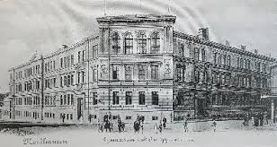

Die Wurzeln des Staatlichen Gymnasiums „Wilhelm von Humboldt" reichen bis ins 16. Jahrhundert zurück. Über Jahrhunderte hinweg hat sich die Schule stetig weiterentwickelt und ist heute eine der angesehensten Bildungseinrichtungen Nordthüringens.

Am 31. Oktober 1945 wurden drei schulgeschichtliche Linien unter sowjetischer Besatzung zusammengeführt zur „Humboldt-Oberschule". Bis zu diesem Zeitpunkt existierten als traditionelle höhere Bildungseinrichtungen in Nordhausen das Gymnasium und das Lyzeum nebeneinander. Heute trägt die Schule stolz den Namen Wilhelm von Humboldts – eines der bedeutendsten Bildungsreformer Deutschlands.
Weitere Informationen zur Schulgeschichte finden sich in den Humboldt-Blättern Nr. 10/2004 und 11/2005.